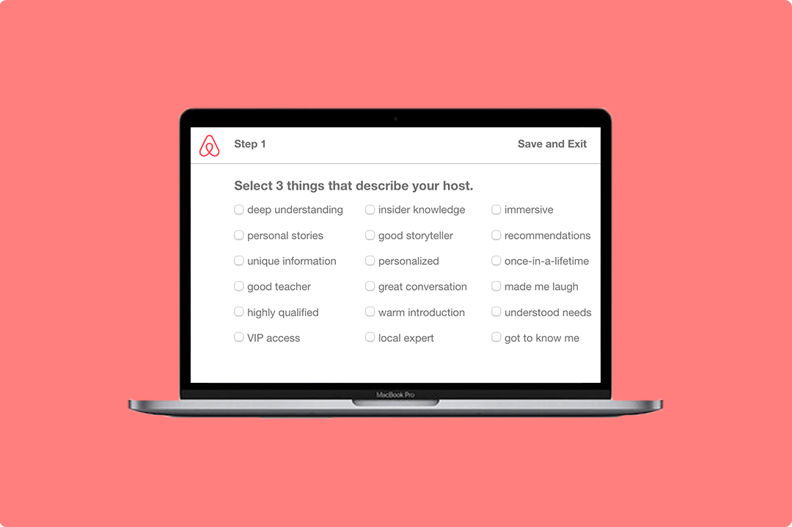
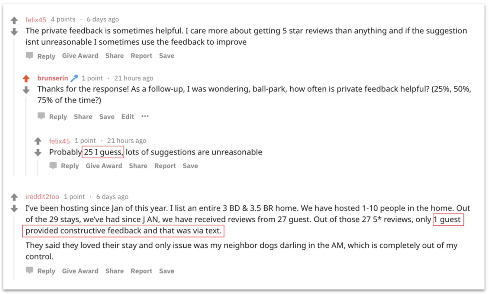
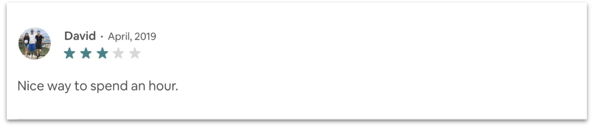
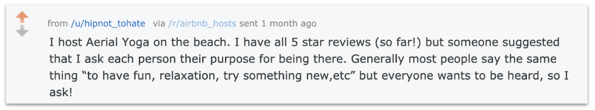
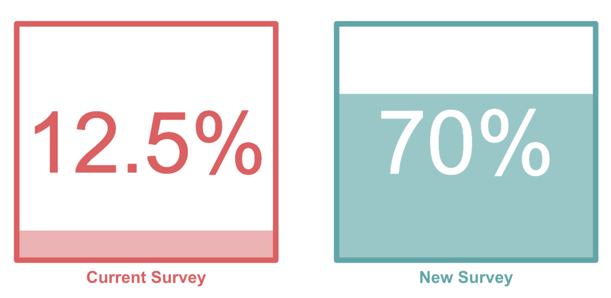
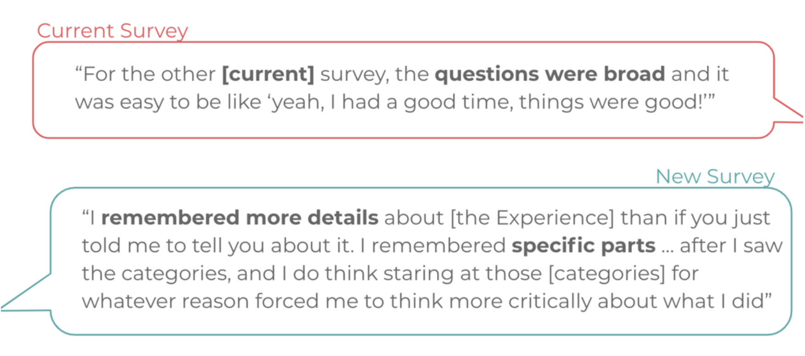

AIRBNB
Role: UX Researcher
When: January 2019 - June 2019
Teammates: Drew Parsons, Rachael Zisk
Outcome: A restructured survey that empowers guests to leave constructive feedback for Airbnb Experience Hosts resulting in an increase of 57.5% valuable feedback for hosts to utilize to improve.

PROBLEM
Experience hosts struggle to improve based on guest feedback because guests don’t leave valuable feedback for improvement. This leads to a lack of improvement in Experiences overall, limiting the success of the Airbnb Experience platform.
RESEARCH
One of the most challenging parts of this project was understanding the problem. Airbnb came to my design group asking for a way for Experience hosts to learn how to improve based on feedback. My team spent several weeks contacting Experience hosts on Airbnb to understand that the real problem was a lack of valuable feedback being left by the users.
We used Reddit threads, interviews, direct messaging, research safaris, and Airbnb Host forums to get in contact with Experience Hosts. Here is an example of one conversation we had with hosts on Reddit:

Once we understood that hosts were frustrated with the value of the feedback they were receiving, we needed to understand what hosts defined valuable feedback as. We used our same resources of hosts to learn what they classified as valuable feedback. We got lots of examples of valuable feedback and even examples of non-valuable feedback.
Not valuable:

Valuable:

From the examples and knowledge that we gained from our connection of 13 Experience Hosts, we were able to create a definition for valuable feedback. Valuable feedback is concrete, points to specific pieces of an Experience, and gives advice for improvement.
DESIGN
In order to tackle creating valuable feedback, my team decided to look at the survey that users were receiving after going on an experience. We copied the exact survey Airbnb sends out by recreating it using Google Slides.
We then ideated how to make the survey invoke more response from users. We user-tested these surveys using the readily available students around us at Northwestern. We asked students to remember a time they did something similar to an Airbnb Experience (for example, have a tour guide in a city, going scuba-diving, etc.). We then randomly selected which survey the student would use to evaluate their host, either Airbnb's current survey or our new survey.
Through three rounds of user-testing with a cumulative of over 50 users, we were able to design a survey that provoked 57.5% increase in valuable feedback. We measured this increase by reading through all survey responses and highlighting areas where valuable feedback (as defined before) was given. A review must meet all the requirements in order for it to be consider valuable.


TAKEAWAYS
For along time my design professors have preached the same idea to me over and over- the client frequently does not know the real problem. Well, I finally got to learn this lesson for myself. Airbnb asked my team to solve a completely problem than what we ended up addressing. It was not until we in connect with several Airbnb Experience Hosts that we learned what their real frustration was. I hate it admit it, but the first 3 months of this project was wasted solving the wrong problem because we did not understand the needs of the user.
Once we got to know our users, everything started to make sense and the solutions really started to come naturally. So, I know now. Understand the needs of the user.